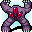
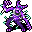
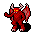

ゾットのオーブ Orb of Zot
英語版 CrawlWiki の記事「Orb of Zot」(0.34 向け、2026-02-04 版)の翻訳です。原文の著者は編集履歴をご覧ください。
このページは冒険の目的であるオーブについて説明している。装備品の種類についてはオーブを参照。
| この計り知れない価値を持つアーティファクトを持って地上へ脱出すれば、あなたの冒険は達成される。 |
 ゾットのオーブは、ゾットの領域の最深層であるZot:5のヴォールトにある。恐ろしいモンスターに守られ、壊せない壁に囲まれている。オーブを手に入れて地上まで逃げ帰るのが、ゲームに勝つための最後の段階だ。ゾットの領域全体でテレポートが妨げられるので、守護者たちと戦わずにこれをやり遂げるのはとても難しい。
ゾットのオーブは、ゾットの領域の最深層であるZot:5のヴォールトにある。恐ろしいモンスターに守られ、壊せない壁に囲まれている。オーブを手に入れて地上まで逃げ帰るのが、ゲームに勝つための最後の段階だ。ゾットの領域全体でテレポートが妨げられるので、守護者たちと戦わずにこれをやり遂げるのはとても難しい。
基本情報
ゾットのオーブは、いつもゾットの大広間の中の同じ場所に生成される。オーブが置かれているのはオーブの台座というマスで、地形を変える効果を一切受けつけない。
オーブは収拾の呪文に抵抗する。3回に1回は失敗し、オーブが動かなかったときでも、唱えると大きな騒音が出る。
オーブを拾うか、収拾で引き寄せるのに成功すると(拾っていなくても)、パンデモニウムの蓋が開いたような大騒ぎになる。
地上への帰還
ゾットのオーブを持った状態で迷宮1階の出口を使えば、ゲームに勝利する。あいにく、ひとたびオーブが動かされると、オーブを守っているさまざまな存在が盗みに気づき、大挙してあなたを追いかけ始める。ゲームのこの部分はオーブを持っての脱出(orb run)と呼ばれることが多い。
オーブを持つか、オーブに収拾を使うと、次のようになる。
- ゾットの領域での不利な効果がずっと続くようになる。テレポートの巻物は効果が出るまでに5〜9ターン余計にかかり、瞬間移動の巻物は行き先が最大2マスずれる。
- オーブが奇妙なエネルギーを放ち、隠密が×0.33になる。
- ゾットの時計が完全に止まる。
- 迷宮全体でモンスターが湧くようになる。
湧いてくるモンスター
オーブを持っての脱出中は、迷宮のすべての階で、いろいろなモンスターが湧くようになる。ほとんどは、あなたの視界のすぐ外に生成される。5ターンごとに28%の確率でモンスターが1体生成される。ケイブリアドスの信者なら、この確率は半分になる。湧くモンスターの内訳は次のとおり。[1]
 パンデモニウムの君主:10%
パンデモニウムの君主:10%

オーブの守護者:15%
上位悪魔:25%
一般の悪魔:10% パンデモニウムに出るモンスターのどれか:40%
パンデモニウムに出るモンスターのどれか:40%
- この中にはパンデモニウムの君主や、群れで出るモンスターも含まれる。つまり、敵の集団がまるごと一度に現れることもある。
アビスでは、こうしたモンスターは湧かない。
戦略
オーブを拾ったら、あとはできるだけ早く迷宮から出ることだけを考える。自動移動(Shift + G)を使えば、外へ出るいちばん速い道筋をゲームが計算してくれる。行き先に D:0 を選べば、出口までまっすぐ向かう道筋になる。オーブを手にしたあとで気にすべき敵は、行く手をふさぐ敵だけだ。追いつけない敵や、たいしたダメージを与えてこない敵は無視していい。行く手にモンスターがいるときは、x を押してから < を押すと、距離のうえでいちばん近い上り階段がわかる。
この段階では、消耗品を使い切ることを恐れなくていい。瞬間移動の巻物、スピードの薬、テレポートの巻物、それにあらゆる回復手段を必要に応じて使い、できるだけ早く出口までの道を切り開こう。掘削のワンドがあるなら、手ごわい相手から逃げたり、階をもっと速く抜けたりするために、即席のトンネルをどんどん掘ればいい。心配性なら(心配して当然だろう?)、オーブを取る前にそういう抜け道を掘っておくことも考えよう。
ゾットのオーブにたどり着いても、すぐに拾う必要はない。スコアを高くしたいなら、帰り道に就く前にエクステンデッドの終盤の場所を攻略して、15個のルーンをできるだけ多く集めるべきだ。それでもDungeon Crawlが簡単すぎるなら、太古の霊廟やパンデモニウム、地獄の各分岐に、オーブを持っての脱出を始めるまで行かずにおくのもいい。
小技
- スピードの薬を飲んで俊足を唱えれば、とても素早い脅威からも逃げ切れる。ただし、ほんの短い間だけだ。階段へ向かって走りながら、追っ手との間にあと1マスの距離を稼ぐのに使おう。
- 手下を召喚すると、追っ手がそれを倒すのに1ターン使ってくれることがある。これで、お供を連れずに階を出るのに必要なあと1マスの距離が稼げるかもしれない。インプの召喚でさえ役に立つ。
- テレポートには遅れがあるとはいえ、逃げる手段として検討する価値はある。敵に追い詰められたり、次の上り階段まで遠かったりするときは、テレポートを発動させて、効果が出るまで持ちこたえよう。ちなみに、テレポートの罠は今でも即座に働く。
- Zot:5 のオーブの場所はいつもどの階段からも遠いので、テレポートすればたいてい階段に近づける。オーブを取る前にテレポートの巻物を読み、8ターン待ってから拾う手もある。近くにテレポートの罠があれば、それでも同じことができる。
- アビスは、オーブを拾ってもモンスターの生成率や顔ぶれが変わらない唯一の場所だ。追い詰められて、(比較的)安全に回復する機会がほしいなら、アビスへ逃げ込めば必要な時間が稼げる。もちろん、ルゴヌの信者でもなければ、都合よくアビスへ行ける手段はめったにない……が、いざというときは歪曲の武器を持って外せば、アビスに送られるかもしれない(あるいはモンスターのすぐ隣にテレポートするかもしれない!)。
- ゾットのオーブに収拾を使うと、必ずオーブを持っての脱出が始まる。以前はオーブをいちばん近い階段まで引き寄せるのがおすすめだったが、今は収拾を使った時点で帰還が始まる。それを踏まえて計画を立てよう。
ゾット防衛
ゾット防衛(Zot Defence)のミニゲームでは、逆に、次々に押し寄せるランダムな敵からオーブを守る役目を負う。ルーン15個ぶんの敵を撃退して、ようやくオーブを取って逃げられる。このミニゲームは0.16から公式のビルドで削除された。
こぼれ話
ゾットのオーブは、もともとThe Wizard's Castleという DOS の古いテキストゲームから来ている。そのゲームでもプレイヤーは冒険者で、Dungeon Crawlと同じようにオーブを取り戻す冒険に挑む。


変更履歴
- 0.34より前は、オーブを持っていても瞬間移動の巻物に不利な効果はなかった。
- オーブの台座は0.32で追加された。それまでは、ドライアドの召喚のような呪文で地形を変えて、オーブを動かすことができた。
- 0.31より前は、オーブを持っているとゴルブリアの通り道の呪文に不利な効果があった。
- 0.28より前は、オーブを持っていると魔力汚染が長引いた。また、このバージョンでゾットのもの以外のオーブが登場した。
- 0.26より前は、ゾットの影響下では、瞬間移動の巻物と、今は削除された精密瞬間移動の呪文が、ランダムな瞬間移動になった。ゴルブリアの通り道はまったく唱えられなかった。
- 0.23より前は、モンスターはもっと頻繁に湧いたが弱かった。脅威になるモンスターが出る確率は低く、ときどき5級悪魔が出る確率もあった。
- 0.17より前は、実際にオーブを拾ったときにだけオーブを持っての脱出が始まった。収拾は成功しにくく、騒音を出すだけだった。また、精密瞬間移動はランダムにならなかった。
- ゾット防衛は0.16から公式のビルドで削除された。
- 0.14より前は、オーブを取るとアビス/パンデモニウム/地獄への門が閉ざされた。また、オーブは所持品のアイテムとして数えられた。
- 0.13で、帰り道で出会うモンスターがより手ごわくなった(弱い悪魔が減り、オーブの守護者が加わった)。
- 0.13より前は、オーブを持っていても、テレポートが5〜9ターン遅れるのは50%の確率でだけだった。
- 0.12より前は、拾ったオーブをプレイヤーが落とすことができた。また、収拾の失敗率は6回に1回だけだった。
- 0.10より前は、オーブを持っていても隠密や魔力汚染への不利な効果はなかった。
- 0.9より前は、オーブを持っていても -cTele はつかず、逆に Zot:5 の -cTele がなくなった。また、オーブの重さはわずか30 aumだった。
- 0.8より前は、オーブは収拾に抵抗しなかった。
出典
- ↑ mon-place.cc:2611 (0.32.1)